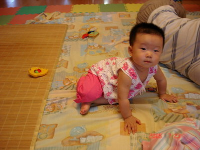

曼曼现在脾气可大了。如果抢走她正在玩的东西，她就大哭着和你急，还打人。她爸爸已经挨了她好几个嘴巴了。不知道现在是不是就该开始对她进行教育了。她这样的脾气发展下去可是不得了呢。

曼曼自创了一个可爱的“斗斗飞”动作。两只手的食指先对在一起，然后猛然向两边分开，同时嘴里大叫一声“哒”或是“呀”，每次都把大家逗得乐个不停。
问曼曼“你的鼻子呢？”她会眯着眼睛使劲吸鼻子。
曼曼有两天很奇怪，什么东西都爱叼在嘴里。找到手帕或是她自己脱下来的短裤，她就叼在嘴里，然后在床上爬来爬去，像极了一只小狗狗。
八月一号开始，赵阿姨就不带曼曼了。郭嘉的姑姑从西安过来帮忙。赵阿姨真是一个让我和郭嘉钦佩的人，她出身高干，却一辈子只能沦落在偏远的沙漠里，儿子女儿也不争气，她却生活的十分乐观和坚强。我平时有时会觉得她有些粗心，但也许正是这种粗犷的性格，才能让她忽略种种我们眼中的不幸，仍然生活的有滋有味。她走了我们都很舍不得。所幸郭嘉的姑姑也十分喜欢曼曼，曼曼很快就适应了。
曼曼从出生后就一直睡自己的小床，挨在我们的大床旁边，我还曾经很得意给她养成了这个好习惯。可是她十个多月会爬会站之后，就开始用自己的方式进行反抗。一天，我正准备上床睡觉，突然看见曼曼从熟睡中醒过来，哼哼了两声，然后就翻了个身爬起来，扶着小床的栏杆爬到大床上，倒头又接着睡了。我悄悄地把她从大床上抱下来。第二天晚上，我睡到半夜醒来，正准备翻身，突然发现曼曼不知什么时候又从小床爬了上来，就紧挨着我睡在大床边上。就这样，曼曼为自己争取到了和妈妈一起睡大床的权利。